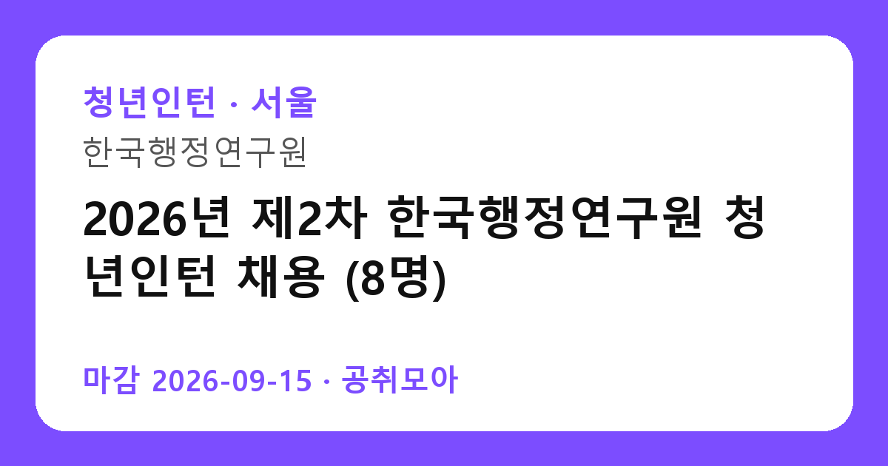

[청년인턴] 2026년 제2차 한국행정연구원 청년인턴 채용 (8명)
한국행정연구원 · 서울 · 마감 2026-09-15 (마감) · 출처 잡알리오

한눈에 보는 모집 조건
| 기관 | 한국행정연구원 |
|---|---|
| 공고명 | 2026년 제2차 한국행정연구원 청년인턴 채용 (8명) |
| 고용형태 | 청년인턴(체험형) |
| 근무지 | 서울 |
| 게시일 | 2026-09-01 |
| 마감일 | 2026-09-15 (마감) |
지원자격, 이렇게 읽으세요
- 만 15~34세 청년
- 전공 무관
- 서류→면접, 간소화 가능
공고문의 응시자격은 짧게 쓰여 있지만 실제로는 세 가지를 봅니다. 첫째 결격사유 해당 여부, 둘째 자격·경력의 직무 연관성, 셋째 근무 시작 가능일입니다. 셋 중 하나라도 애매하면 원문 공고문의 세부 조항을 먼저 확인하고 지원서를 쓰세요. 특히 한국행정연구원 공고는 청년인턴(체험형) 전형이라 서류에서 직무 연관 키워드(청년인턴)를 명시하는 게 유리합니다.
이 공고의 포인트
'청년인턴' 조건을 눈여겨보세요. 이번 한국행정연구원 모집에서 '만 15~34세 청년' 항목이 사실상 1차 필터 역할을 합니다. 본인이 맞는다면 지원 우선순위를 맨 위로 올리고, 아니라면 비슷한 조건의 관련 공고 3개를 함께 검토해 차선을 마련해 두세요.
전형은 어떻게 진행되나
전형은 서류심사로 시작해 면접심사로 끝나는 2단계가 기본입니다. 서류 단계의 평가자는 지원서와 자기소개서에서 직무 적합성을 찾고, 면접 단계에서는 실무 이해도와 오래 근무할 사람인지를 확인합니다. 마감일(2026-09-15) 당일 접수는 시스템 지연이 잦으니 하루 먼저 끝내 두는 게 안전합니다. 접수번호와 수험표 출력까지 마쳐야 접수가 완료됩니다.
이런 분께 추천해요
- 서울 근무가 가능한 분 — 통근·거주 조건이 맞는지가 1순위입니다
- 청년인턴(체험형) 전형을 찾는 분 — 청년인턴 분야 관심자라면 우선 검토 대상입니다
- 마감(2026-09-15) 안에 서류를 낼 수 있는 분 — 마감이니 오늘 지원서 초안부터 잡으세요
지원 전 체크리스트
- 한국행정연구원 원문 공고문 저장했는가(공고 변경 대비)
- 지원서 초안과 증빙 파일이 준비됐는가
- 접수 마감일 2026-09-15(마감)을 달력에 표시했는가
- 서울 출퇴근·거주 조건이 맞는가
모집 일정과 제출 타이밍
게시일은 2026-09-01, 마감은 2026-09-15입니다. 이미 마감된 공고입니다. 다음 회차를 노리세요. 공공 채용은 마감일 24시간 전부터 지원자가 몰려 접수 페이지가 느려지거나 증빙 업로드가 실패하는 일이 잦습니다. 일정 운영의 정석은 이렇습니다. 첫날에는 공고문과 직무기술서를 출력해 응시자격·우대사항에 형광펜을 치고, 중간 기간에는 자기소개서 초안과 증빙 스캔을 끝내고, 마감 전날에는 접수 시스템에 미리 입력까지 마쳐 두는 것입니다. 마감 당일에 처음 접속하는 지원자가 가장 많이 탈락합니다. 접수번호가 발급되고 수험표(또는 접수확인서)가 출력돼야 접수가 끝난 것이니, 제출 후 확인증까지 꼭 챙기세요.
직무 이해하기: 청년인턴
체험형 인턴의 실제 업무는 행정보조, 자료 정리, 민원 응대 보조가 중심입니다. 거창한 스펙보다 성실함과 기본 OA 활용 능력을 어필하는 게 통과율이 높습니다. 인턴 수료증은 이후 정규직 지원 때 가점으로 이어지는 기관이 많으니, 수료 조건(출근율 등)도 미리 확인해 두세요. 한국행정연구원의 이번 채용(청년인턴(체험형))도 같은 잣대로 보면 됩니다. 공고 제목에 적힌 분야명과 직무기술서의 필요역량을 나란히 놓고, 본인 경험에서 겹치는 키워드를 세 개 이상 뽑아보세요. 그 세 개가 자기소개서와 면접 답변의 뼈대가 됩니다.
자기소개서 작성 팁
좋은 자기소개서의 공식은 단순합니다. 지원 분야(청년인턴)와의 인연 한 줄, 숫자가 박힌 경험 두 개, 입사 후 포부 한 단락입니다. 반대로 한국행정연구원 서류 탈락 사유 상위권은 늘 비슷합니다. 직무와 무관한 자서전식 전개, 증빙 자료와 어긋나는 주장, 마감일(2026-09-15) 실수입니다. 청년인턴(체험형) 전형 지원자라면 채용 즉시 업무가 가능하다는 점을 글로 못 박아 두세요. 실무 투입 속도가 가산점처럼 작용합니다.
면접 준비 포인트
면접은 서류에 쓴 경험의 진위 확인과 조직 적합성 검증이 목적입니다. 자기소개서에 적은 두 가지 경험을 1분 스피치로 말할 수 있게 연습하고, 한국행정연구원의 최근 보도자료나 경영공시에서 핵심 사업 하나를 골라 지원 분야와 연결해 답변을 준비하세요. 마지막 질문 시간에는 근무지(서울)·근무형태(청년인턴(체험형))를 감당할 수 있다는 의지를 짧게 밝히는 것이 효과적입니다. 복장은 단정하게, 도착은 30분 전에, 질문에는 결론부터 말하는 것이 공공기관 면접의 기본입니다.
급여·근무조건 읽는 법
공고문의 보수 표기는 호봉·수당·상여를 합친 기준이 아니라 기본급 기준인 경우가 많습니다. 실제 수령액은 원문의 보수·복무 조항과 동일 기관 재직자 채용 후기를 함께 봐야 가늠이 됩니다. 청년인턴(체험형) 공고라면 계약 기간, 연장·전환 조건, 4대 보험과 퇴직금 적용 여부를 원문에서 반드시 확인하세요. 근무지(서울)가 도서·산간이거나 교대 근무가 포함된 경우에는 주거 지원·통근버스 조항도 체크리스트에 넣으세요.
자주 묻는 질문
- 경쟁률은 어느 정도로 예상되나요?
인기 기관·서울 근무 공고는 서류 경쟁률이 10대 1을 넘는 일이 흔합니다. 다만 '청년인턴' 같은 조건부 전형은 실질 경쟁률이 낮아지는 경우가 많으니, 본인 조건에 맞는 공고를 고르는 것 자체가 전략입니다. - 합격자 발표는 어디서 확인하나요?
한국행정연구원 홈페이지 채용 게시판과 지원 시 등록한 문자·이메일로 안내됩니다. 발표일에는 접속이 폭주하니 접수번호를 미리 메모해 두세요. 예비합격자 운영 여부도 원문에서 함께 확인하는 것이 좋습니다. - 불합격하면 다음 기회는 언제인가요?
공공기관은 상·하반기 정기 채용과 수시·추가 모집이 반복됩니다. 이번 마감일(2026-09-15)을 놓쳐도 같은 기관의 다음 회차가 열리니, 공취모아의 청년인턴 탭을 구독하듯 수시로 확인하세요.
함께 보면 좋은 공고
[교육청] 2026학년도 인천중산중학교 기간제 교원 채용 공고(영양) — 마감 2026-09-09[교육청] 2026학년도 충훈고 시간강사 채용(체육) — 마감 2026-09-10[공기업] 2026년도 예금보험공사 신입직원 채용 (35명) — 마감 2026-09-11출처: 잡알리오 공개정보를 바탕으로 공취모아가 정리한 안내글입니다. 모집 조건·일정은 변경될 수 있으니 지원 전 반드시 원문 공고문을 확인하세요. 본 글은 정보 제공용이며 합격을 보장하지 않습니다.